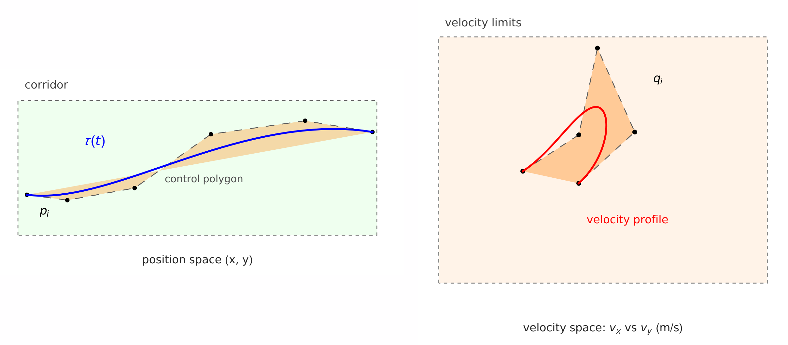
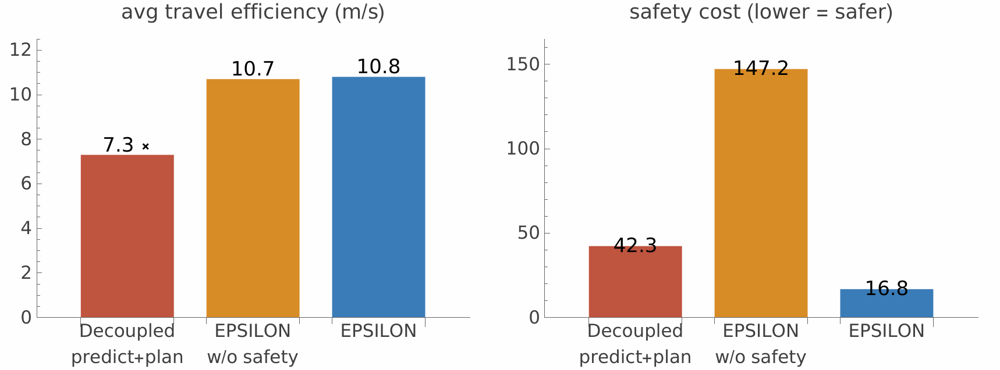

An engineer's tour of “EPSILON: An Efficient Planning System for Automated Vehicles in Highly Interactive Environments” (W. Ding, L. Zhang, J. Chen, S. Shen, IEEE Transactions on Robotics, 2021) and its open-source implementation.
The puzzle we'll spend this page on. You're driving in the left lane, stuck behind a car that just broke down. The right lane is a dense but moving queue. There is technically room to merge — bumper-to-bumper, at 60 km/h. Will the driver behind the gap let you in?
Notice what kind of question that is. The gap's future is not a fact you can observe — it depends on your next move. Wait politely and nobody needs to yield: the gap "doesn't exist". Signal and nudge in and the follower may back off, or may speed up. A planner that ignores this — the textbook predict, then plan pipeline — is stuck between two failures: predict that others won't cooperate and you wait forever; predict that they will, and bet a crash on it. EPSILON is a complete, open-source answer to this dilemma that ran for real kilometers in dense city traffic, and its two big ideas — maneuver-level branching with closed-loop forward simulation, and constraining a trajectory optimizer with a corridor of space-time boxes — are worth stealing even if you never touch a car (they show up in drone planners too).
Engineers usually split this into prediction (what will other cars do?) and planning (given those futures, what do I do?). The split is exactly what breaks here. A predicted trajectory is produced before anyone knows what you'll do, so it can't represent the follower reacting to your nudge. You then bolt on a safety margin to absorb the error — and in dense traffic the only margin that's genuinely safe is one where you never merge at all. Over-conservatism isn't a tuning bug; it's the predictable output of predicting an interaction that you are half of.
The principled fix has been known for decades: model the whole thing as a partially observable Markov decision process (POMDP) — plan while reasoning about hidden things (their intent) and their reactions (their model of you). The catch is brute force. A POMDP solver expands a tree of your actions, and at every level branches again over what you'd then observe, and over what everyone else might do. The EPSILON authors point out what this means at driving scale: forward-simulating 5 seconds at 0.2 s steps is 25 decision points; branch over even 9 primitive controls (3 speeds × 3 steerings) and you get \(9^{25} \approx 7\times10^{23}\) action sequences — before counting the other cars' intentions, which multiply per agent. The formalism is right; the search is comically infeasible.
Full trajectories of every car? A fine speed/steer lattice? EPSILON's bet: neither is needed. Humans decide with a short menu of maneuvers ("squeeze in", "follow") and think mainly about the two or three cars that could actually hit them. Everything else can be approximated crudely. Hold that bet — §4–§5 cash it in.
EPSILON runs two planning layers side by side, both at 20 Hz, and — this is the structural surprise — no prediction module. Anticipation happens inside the behavior planner (§3).
The two highlighted layers divide the question cleanly. The behavior planner decides what: its output is not the word "merge" but a decision \(\mathcal{D}_t = [x_{t+1}, x_{t+2}, \ldots, x_{t+H}]\) — a coarse state sequence, about 5 s long at 1 s resolution — for every agent on the road, including how it expects the follower to react. The motion planner decides how: wrap that state sequence in a safety tube and optimize a smooth, dynamically feasible trajectory through it. Because the trajectory is forced to stay close to \(\mathcal{D}_t\), the two layers agree — a consistency property most modular stacks lack.
Formally, the behavior layer solves a POMDP \(\langle \mathcal{X}, \mathcal{A}, \mathcal{Z}, T, O, R\rangle\). You never observe the full state \(x_t\) — other cars' intentions and aggressiveness are hidden — so you carry a belief \(b_t(x_t)\), updated by Bayes' rule after each action and observation:
\[ b_t(x_t) = \eta\, O(x_t, z_t) \int_{\mathcal{X}} T(x_{t-1}, a_t, x_t)\, b_{t-1}(x_{t-1})\, dx_{t-1} \]with \(T\) the motion model, \(O\) the observation model, and \(\eta\) a normalizer. So far, textbook. The paper's first useful move is factoring \(T\) for traffic. You only command your own car (\(a_t = a_t^0\), superscripts index agents, \(i=0\) is ego); everyone else's motion is their decision. Assuming instantaneous independence between vehicles, the joint transition splits into one term per agent:
\[ p(x_t \mid x_{t-1}, a_t) \approx \underbrace{p(x_t^0 \mid x_{t-1}^0, a_t^0)}_{\text{ego transition}} \prod_{i=1}^{N} \int_{\mathcal{A}^i} \underbrace{p(x_t^i \mid x_{t-1}^i, a_t^i)}_{\text{their kinematics}}\, \underbrace{p(a_t^i \mid x_{t-1})}_{\text{driver model}}\, da_t^i \]Read the last factor carefully — the driver model \(p(a_t^i \mid x_{t-1})\) maps the whole joint state to agent \(i\)'s action. It is the entire interaction physics of the paper: it's where "the follower sees you and decides" lives. And note what else fell out: because every agent's belief is updated against the same joint state and observations, prediction is literally the belief-update step inside planning. Methods that predict first and plan later are, in this formulation, a crude approximation of the POMDP — one that throws away the conditioning on your own future actions.
One more bookkeeping step, and it's the bridge to the motion layer. Standard POMDP solvers output a single next action. EPSILON instead walks down the belief tree extracting, at every step, the best action \(a_t^*\) and the most likely observation \(z_t^*\), producing a trace \(\mathcal{S}_t = [b_t^*, a_{t+1}^*, z_{t+1}^*, \ldots]\). Collapsing each belief to its mode yields the decision \(\mathcal{D}_t = [x_{t+1}, \ldots, x_{t+H}]\) for all agents — a rough choreography of the next ~5 seconds. That's what the motion planner will receive. All that's left is computing \(\mathcal{D}_t\) in under 50 ms. The next two sections are the two pruning knives: one through the action space, one through the intention space.
Watch a human driver in traffic. They do not re-decide steering angle every 50 ms — they commit to a maneuver ("hold lane", "change left, assertively") for a second or two, then re-assess. EPSILON copies this structure. A semantic action \(\phi\) is a multi-second maneuver carried out by a closed-loop controller: at every 0.2 s simulation step, the controller looks at the current scene and emits primitive controls (acceleration, steering). The ego menu is 3 longitudinal modes (aggressive / moderate / conservative — different desired speeds and headways) × 3 lateral modes (keep lane / change left / change right) = 9 actions; other agents get a smaller menu.
Maneuvers still compose into policies, and sequences explode: \(|\Phi|^h\). The second cut is behavioral: a driver never flips back and forth within one planning cycle. From the maneuver you're currently executing, every candidate policy changes action at most once. The candidates form a DCP-Tree (domain-specific closed-loop policy tree): its root is the ongoing action — the first move of last cycle's winning policy — and each path descends by either continuing or switching once. If that sounds lossy, note the loop: the tree is rebuilt every cycle (every 50 ms) from whatever action is now ongoing, so multi-flip behavior emerges across cycles for free.
demos/dcp_tree_count.py — run: python3 demos/dcp_tree_count.py)$ python3 demos/dcp_tree_count.py
action menu |A| = 9, tree depth h = 5
all action sequences : 59,049 policies
DCP-Tree (1 change) : 33 policies
reduction : 1,789x
depth h all sequences DCP-Tree
2 81 9
3 729 17
4 6,561 25
5 59,049 33
6 531,441 41
7 4,782,969 49
8 43,046,721 57Leaf count grows linearly, \(1 + (|\mathcal{A}|-1)(h-1)\): with 9 actions and a 5 s horizon you evaluate 33 policies instead of 59,049 — and each is a full closed-loop simulation, not a one-step guess.
It re-plans at 20 Hz. The tree is rebuilt from the ongoing action each cycle, so "change left, then give up, then change again" is three consecutive planning cycles, each committing to one switch. The restriction tames the search within a cycle; replanning restores flexibility across cycles.
The action menu is now small, but each policy must still be evaluated against what other drivers intend — and intentions are hidden. In a raw POMDP you'd sample intention combinations: with \(N\) cars and a few intentions each, that's again exponential in the number of agents. EPSILON's observation-space knife has two parts.
Part 1 — make intentions a cheap probability. An "intention" is just which lane center-line the car will follow, so the belief over intentions is a categorical distribution over candidate center-lines. A deliberately tiny network estimates it: a 1D-convolution lane encoder, an LSTM trajectory encoder, and an MLP with a softmax head. Because the output is a distribution over geometric candidates rather than fixed classes, a new road just means new candidate lines — no retraining.
Part 2 — branch only where it's dangerous. This is conditional focused branching (CFB). For each candidate ego policy, first forward-simulate once with every car assigned its most-likely (MAP) intention. Most cars never come close to the ego policy's path — for them the MAP guess is fine. The few cars whose simulated future does threaten the maneuver are critical: re-simulate with their intentions swapped, one alternative at a time. A policy's score is the belief-weighted average over those few scenarios.
One ego policy × one intention assignment = one scenario, and each is realized by a deterministic multi-agent forward simulation: every car (simulated ego included) runs its driving controller on the simulated joint state, stepping at 0.2 s over ~5 s on a kinematic bicycle model. Because each controller reads the latest simulated state, the cars react to each other inside the hypothesis — "if I start drifting in, the follower brakes (or doesn't)". This is the conditional prediction the merge needs, and the scenarios are independent, so they parallelize trivially.
The controllers are where "noisily rational" gets modeled. Other agents: a plain intelligent driver model (IDM) for speed — an acceleration law with a desired speed and a desired time headway (the aggressiveness knob: 1.0 s headway is a tailgater, 2.0 s is polite) — plus pure-pursuit steering. The simulated ego gets a smarter context-aware controller; the interesting half is how it handles a lane change into a specific gap:
\[ s_{des} = \min\big(\max(s_{tr},\, s_{ego}),\, s_{tf}\big), \qquad \dot{s}_{des} = \min\big(\max(\dot{s}_{r},\, \dot{s}_{pref}),\, \dot{s}_{f}\big) \]where \(s_{tr}\) and \(s_{tf}\) mark the gap's usable window — just ahead of the rear car \(C_r\) and just behind the front car \(C_f\), each padded by a minimum spacing and a safe headway — and \(\dot{s}_{pref}\) is the maneuver's preferred speed. Read the two \(\min/\max\) sandwiches: the target position is clamped to inside the gap, and the target speed to between the neighbors' speeds. Even a snug gap yields a well-defined desired state, so the ego converges toward the slot instead of declaring "gap too small". A tracking law then drives \((s, \dot{s})\) toward \((s_{des}, \dot{s}_{des})\), blended with the ordinary cruise controller, while reactive pure-pursuit handles the lateral drift (and bends toward a fallback path when the target lane is blocked).
Everything so far has a hidden assumption: the simulated drivers behave like their models. Real city traffic breaks that — drivers are noisily rational, sometimes aggressively irrational. EPSILON (new in this paper, relative to the authors' earlier EUDM planner) adds two mechanisms that accept imperfect models instead of inflating safety margins.
1 — an RSS referee inside the simulation. At every step, each simulated car checks its situation against Responsibility-Sensitive-Safety (RSS) rules — formally provable "proper responses" like maintain a headway from which you can always stop, given the leader's worst brake. If the ego's simulated state becomes RSS-unsafe with respect to some proper response, the controller is overridden by that response. So a simulation can't wander into a dumb crash by trusting a bad driver model — and the cost still records the danger, so the reckless policy gets scored down (§8).
2 — a backup plan for every policy. A candidate policy is executable only if its designated backup policy — for a lane change, "cancel and fall back behind \(C_r\)" — also passes its own full simulation and checks. If the forward plan and its escape route are both safe, the maneuver is genuinely safe even if other cars misbehave; if no policy has a feasible backup, the system falls to autonomous emergency braking. This is the mechanism behind the benchmark behavior in Fig. 5 — no hand-written state machine, just "don't commit to a maneuver whose exit door you haven't checked".
It would, if the referee were the only mechanism — that ablation exists, and it merges fastest while racking up 8.7× the safety cost (§10). The backup-plan rule is the counterweight: aggression is allowed only when a verified exit exists. The pairing "trust the simulation, but always price and verify the way out" is what buys both efficiency and safety.
Each scenario is simulated; each policy is scored by a discounted sum over its ego trajectory:
\[ F_{total} = \textstyle\sum_{t} \gamma^{t} \,\big( \lambda_1 F_e + \lambda_2 F_s + \lambda_3 F_n \big), \qquad \gamma = 0.7 \]Three terms, plain meanings. \(F_e\) efficiency: stay close to your desired progress — this is what makes waiting cost something. \(F_s\) safety: a collision costs a huge constant; RSS-dangerous states cost exponentially growing penalties; plus a term for keeping speed inside the provably-safe interval. \(F_n\) navigation: follow the human-set route command, and prefer decisions consistent with the previous cycle (stability). The weights are ordinary tuning knobs; the structure — especially "waiting is expensive" — is what produces push-wait-merge rather than either extreme.
The behavior layer hands over \(\mathcal{D}_t\) — a choreography sampled at 1 s with an 0.2 s-capable vehicle model nowhere in sight. The motion layer's job: a trajectory that is smooth, dynamically feasible, and faithful to the decision. EPSILON wraps the decision with a spatio-temporal semantic corridor (SSC), from the authors' earlier work: a chain of boxes in \((x, y, t)\) space, each box carrying a semantic meaning — stay inside the lane, avoid this obstacle, keep speed under this limit. That last word is the trick: every constraint the road can throw at you becomes the same shape — "the trajectory must pass through box \(k\) during time interval \(k\), obeying box \(k\)'s rule".
Now the trajectory. EPSILON parameterizes it as a piecewise Bézier curve in time — one quintic per time segment —
\[ \tau(t) = \textstyle\sum_{i=0}^{5} p_i\, B_i^5(t), \qquad \tau'(t) = \textstyle\sum_{i=0}^{4} q_i\, B_i^4(t), \quad q_i = \tfrac{5}{\Delta t}(p_{i+1} - p_i) \]— and Bézier curves have two properties that turn geometry into linear algebra:
The convex hull property: the entire curve segment lies inside the convex hull of its control points \(p_i\). So "the car avoids the obstacle during \([t_k, t_{k+1}]\)" — a statement about infinitely many points — becomes "the six control points lie in the corridor box", six linear constraints. Check the corners, own the whole segment.
The hodograph property: the derivative of a Bézier is another Bézier whose control points are the scaled differences above. Velocity, acceleration, even jerk limits become box constraints on \(q_i\) — again linear.

Fig. 7 — the two properties at work. Left: the curve τ(t) can never leave the hull (orange) of its control points; hull inside corridor ⇒ curve inside corridor. Right: the derivative is itself a Bézier; putting its control points inside the velocity-limit box caps the speed for the entire segment.
Both cost terms are quadratic: minimize \(\int \|\tau'''(t)\|^2 dt\) (smoothness — the integral of squared jerk) plus \(\sum_k \|\tau(t_k) - x_{t+k}\|^2\) (similarity to the decision states from the behavior layer — the consistency glue between the two layers). Linear constraints + quadratic cost = a quadratic program, solved by OOQP in a few milliseconds; if the QP comes back infeasible, that's a message the corridor is impossible — fed back to the behavior layer to try the next-best decision. Plan and execution loop on each other.
Because after the SSC translation, they are all the same object: per-segment box constraints on (some derivative's) control points. Lane geometry clips the box; obstacles and speed limits shrink it; the solver never learns which semantic produced which box. Adding a new road rule to the planner = adding a rule that inflates or clips boxes.
demos/bezier_hull.py — run: python3 demos/bezier_hull.py)$ python3 demos/bezier_hull.py
1,500,000 sampled points on each curve family
Bezier: 0 points outside the box (worst overshoot 0.000 m)
Catmull-Rom: 35395 points outside the box (worst overshoot 0.077 m)Same four random control points, two curve styles. The Bézier stays provably inside their convex hull — 0 violations in 1.5M samples. The interpolating spline passes through the same points yet bulges outside the box in ~2% of samples: certify-the-nodes is simply unsound for it. This is why corridor planners reach for Bézier (or B-spline) curves.
The forward simulation is itself a trajectory predictor, so it can be scored like one. On Argoverse's test set, the closed-loop simulation beats dedicated prediction networks on best-of-6 accuracy — with no learned trajectory decoder:
| Method | minADE ↓ (m) | minFDE ↓ (m) |
|---|---|---|
| NN | 1.71 | 3.29 |
| LSTM encoder–decoder | 2.34 | 5.44 |
| TPNet-map-mm | 1.61 | 3.28 |
| UST | 1.47 | 2.94 |
| forward simulation (EPSILON) | 1.41 | 2.48 |
The ablation explains why: swapping the intention network for an oracle that knows the true future lane improves minADE only from 1.20 to 1.13 — the residual error lives in the assumed driver controllers, not the intention estimator. A cheap categorical estimator over center-lines is enough.

Same stalled-car-plus-dense-queue scenario as Fig. 1, simulated with agents whose aggressiveness is dialed up (shortest headway 1.0 s). In polite traffic (2.0 s headways) all three planners behave comparably. In aggressive traffic the decoupled predict-then-plan baseline never finds a mergeable gap — it waits in the hazard at 7.3 m/s. Removing only the safety mechanism (§7) merges at speed but accepts 147.2 average safety cost — 8.7× EPSILON's 16.8 at the same 10.8 m/s. That pair of ablations is the paper's thesis in one table: interaction-awareness buys the merge, the backup-plan check keeps it safe.
An electrified SUV with stereo + fisheye cameras, radar, ultrasonic, and low-cost INS/GNSS — no LiDAR, no HD-map, no RTK GPS — running the full stack on an NVIDIA Xavier, tracked by an MPC controller. Four highway/expressway trials:
| Trial 1 | Trial 2 | Trial 3 | Trial 4 | Total | |
|---|---|---|---|---|---|
| Distance / duration | urban expressway, 60–90 km/h | 12.5 km | |||
| Lane changes (success) | 14 (12) | 17 (15) | 8 (5) | 10 (8) | 49 (40, >80%) |
| Backup plan triggered (canceled) | 3 (2) | 2 (1) | 3 (1) | 2 (0) | 10 (4) |
| Human takeovers | 1 | 1 | 3 | 2 | 7 |
| Worst longitudinal decel. | −2.07 | −3.24 | −4.88 | −2.08 | m/s² |
Both planning layers hold 20 Hz with <50 ms per cycle on a desktop i7. The backup-plan rule fired 10 times in real traffic — the push-wait-merge behavior of Fig. 5 is not a demo artifact. Takeover causes were all "unsafe lane change / distance" judgments by the safety driver, i.e., the system kept driving until a human got nervous, and the rides stayed comfortable (worst braking 4.88 m/s², comparable to an attentive human).
HKUST-Aerial-Robotics/EPSILON is a complete, runnable C++/ROS system (MIT license) — decision-making and motion planning, plus a lightweight multi-agent simulator so you can exercise it without a car:
EPSILON/
├── core/
│ ├── behavior_planner/ # mission/route logic, behavior-level glue
│ ├── forward_simulator/ # closed-loop multi-agent scenario rollout (§6)
│ ├── semantic_map_manager/ # occupancy grid, tracklets, lanes, grid inflation
│ ├── motion_predictor/ # semantic trajectory prediction for baselines
│ ├── vehicle_model/ # kinematic bicycle + ideal MPC tracking model
│ ├── phy_simulator/ # physical simulation & interface to RViz
│ ├── route_planner/ common/ # routing, math/basics/lane primitives
├── util/
│ ├── eudm_planner/ # ★ the behavior planner: DCP-Tree, semantic actions, scoring
│ ├── ssc_planner/ # ★ the motion planner: corridor + Bézier QP (OOQP)
│ └── ai_agent_planner/ # scriptable other-agents (IDM policies, Python)
├── app/planning_integrated/ # launch files wiring the full pipeline
└── aux_tools/ # terminal_server: W-A-S-D to perturb any agent liveTo see it drive: roscore, open RViz with phy_simulator/rviz/phy_simulator_planning.rviz, then launch planning_integrated test_ssc_with_eudm_ros.launch, the adversarial agents ai_agent_planner onlane_ai_agent.launch, and finally phy_simulator phy_simulator_planning.launch. The fun part is aux_tools/terminal_server.py: click any traffic car and drive it with W-A-S-D — cut the planner off and watch the backup-plan machinery catch it. Dependencies are modest for the scale: ROS, OOQP (the QP solver), protobuf (parameter config), glog, OpenBLAS. Reading order for the algorithms: eudm_planner first (the semantic action set and DCP-Tree are easy to find), then ssc_planner for the corridor → QP pipeline.
Where this sits. The behavior layer descends from MPDM (evaluate a small set of semantic policies by closed-loop simulation) and the authors' EUDM; the motion layer is their SSC planner. The corridor + Bézier-hull trick is the same one used by several quadrotor motion planners (fitting, for a group named "Aerial Robotics") — if you've seen flight corridors, you already know §9. The driver model is IDM; the safety referee is RSS. If you want the decision-theory underneath §3, the local POMDP explainer covers beliefs and belief trees in depth.
Honest limits. The maneuver vocabulary is only as rich as the hand-written controllers behind it; the driver models are assumptions that the safety net mitigates but does not erase; the prediction win is benchmark-scale (Argoverse), not a SOTA-claims paper; and 49 real lane changes is a strong demo, not a fleet study. The 2022+ literature (game-theoretic and joint prediction-planning methods) builds directly on this foundation.
Written as a learning artifact in the reference/ library. Sources: EPSILON (Ding, Zhang, Chen, Shen, IEEE T-RO 2021, arXiv:2108.07993), the official repository, and the linked precursor papers. Local files: demos/dcp_tree_count.py, demos/bezier_hull.py, assets/bezier_hodograph.png, assets/merge_benchmark.png.